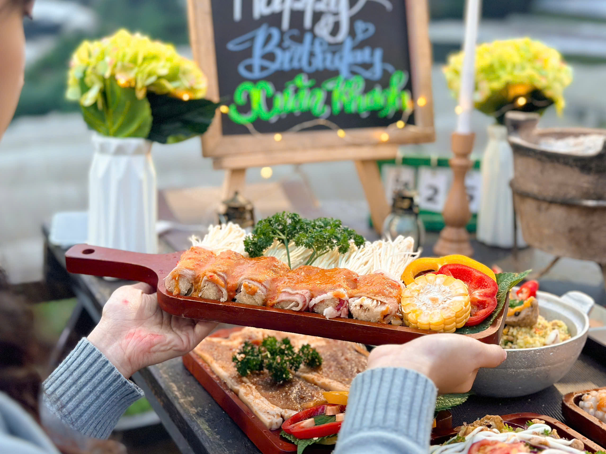

Mùa xuân Đà Lạt — Thời tiết lý tưởng để nướng ngoài trời
Tháng 2-3 ở Đà Lạt, nhiệt độ dao động 15-22°C, trời khô ráo ít mưa. Đây là mùa đẹp nhất để ăn nướng ngoài trời — không quá lạnh như mùa đông, không lo mưa bất chợt như mùa hè. Ngồi ngoài trời nướng BBQ, gió xuân nhẹ thổi, cảm giác "chill" không gì sánh bằng.
Món nướng hợp mùa xuân Đà Lạt
Mùa xuân là lúc rau củ Đà Lạt ngon nhất: bắp nướng mật ong, khoai lang nướng, nấm nướng bơ tỏi. Kết hợp với bò nướng sa tế, sườn heo nướng mắc khén — bữa nướng mùa xuân đậm đà hương vị phố núi.

Nướng BBQ ngắm hoa xuân Đà Lạt
Tháng 2-3, Đà Lạt rực rỡ với hoa mai anh đào, hoa ban, mimosa vàng. Nhiều quán nướng ngoài trời có view đồi hoa, vườn hoa — bạn vừa ăn vừa ngắm cảnh thiên nhiên tuyệt đẹp.
Trạm Dừng Chill — Nướng BBQ view xuân tuyệt đẹp
Tại Trạm Dừng Chill (111 Huỳnh Tấn Phát, P11), mùa xuân mang đến khung cảnh thung lũng xanh mướt, hoàng hôn vàng ấm hơn bao giờ hết. Quán mở cửa từ 15:00, bạn có thể đến sớm thưởng thức trà chiều rồi chuyển sang nướng BBQ khi nắng tắt.

Lên kế hoạch ăn nướng mùa xuân
Mùa xuân Đà Lạt đông khách du lịch, đặc biệt cuối tuần và dịp lễ. Đặt bàn trước qua hotline 0989.765.070 để đảm bảo có chỗ đẹp nhất.